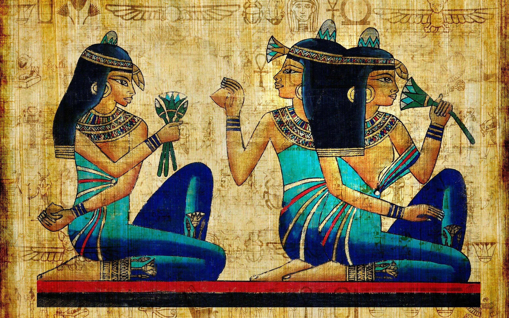

Egipatska mitologija se zasniva na totemizmu - vjerovanju u svete životinje. Karakteriziraju je božanstva s ljudskim tijelom i glavom životinje, s tim da postoje iznimke. Jedna od glavnih dijelova religije drevnog Egipta jeste vjerovanje u zagrobni život, èemu svjedoèi velik broj pronaðenih grobnica, meðu kojima su piramide najveæe, zatim velik broj mumija, statua, ali i brojna božanstva povezana sa zagrobnim životom. Veæina bogova ima ankh, sveti znak života.

Egipæani su se klanjali bogovima, štovali ih i prinosili im žrtve. Smatrali su ih gospodarima svijeta. Vjerovali su u tisuæe bogova. Tako je bilo uvijek, osim za razdoblja Amarne. Po naredbi faraona Ekhnatona, hramovi su zatvoreni, a izgraðen je novi grad - Amarna. U Amarni su štovali Atona - Sunèev disk. Prikazima starih bogova uništavana su lica. Za vrijeme invazija Grka, Thoth je povezivan sa Hermesom. Tijekom vladavine Rimljana, uvedeno je kršæanstvo, te su hramovi zatvoreni. Izdana je naredba da se zabrani štovanje poganskih bogova. Tada je Egipat preživio sve, osim gubitka svojih bogova.